전자계산기기사 (2008-09-07 기출문제)
1과목: 시스템 프로그래밍
1. 매크로 관련 용어 중 매크로 호출 부분에 정의된 매크로 코드를 삽입하는 것을 무엇이라 하는가?
- 매크로 확장
- 매크로 호출
- 매크로 정의
- 매크로 라이브러리
(정답률: 69%)

2. 절대로더(Absolute Loader)를 사용하는 경우 로더(Loader)에 의해서 수행되는 기능은 무엇인가?
- 기억장소 할당(allocation)
- 연결(linking)
- 재배치(relocation)
- 적재(loading)
(정답률: 62%)
3. 다음 ( ) 안의 내용으로 옳게 짝지어진 것은?
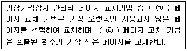
- ㉠ LFU, ㉡ FIFO
- ㉠ LRU, ㉡ LFU
- ㉠ FIFO, ㉡ LRU
- ㉠ LRU, ㉡ FIFO
(정답률: 60%)
4. 매크로 프로세서(Macro Processor)의 기본 수행작업에 해당하지 않는 것은?
- 매크로 정의 확장
- 매크로 정의 인식
- 매크로 호출 인식
- 매크로 호출 확장
(정답률: 50%)
5. 일반적인 기능의 로더에 가장 가까운 것은?
- Compile And Go Loader
- Absolute Loader
- Direct Linking Loader
- Dynamic Loading Loader
(정답률: 80%)
6. 프로세스가 일정 시간 동안 자주 참조하는 페이지의 집합을 의미하는 것은?
- Prepaging
- Thrashing
- Locality
- Working Set
(정답률: 69%)
7. 어셈블리어에서 어떤 기호적 이름에 상수 값을 할당하는 명령은 무엇인가?
- EQU
- ASSUME
- LIST
- EJECT
(정답률: 83%)
8. 어셈블리 언어로 작성된 원시 프로그램의 수행 순서로 옳은 것은?
- 원시 프로그램 → 어셈블리 → 로더 → 연결편집기
- 원시 프로그램 → 연결편집기 → 어셈블리 → 로더
- 원시 프로그램 → 어셈블리 → 연결편집기 → 로더
- 원시 프로그램 → 로더 → 연결편집기 → 어셈블리
(정답률: 65%)
9. 기억장치 배치 전략 중 프로그램이나 데이터가 들어갈 수 있는 크기의 빈 영역 중에서 단편화를 가장 작게 남기는 분할 영역에 배치시키는 방법은?
- BEST FIT
- WORST FIT
- FIRST FIT
- LAST FIT
(정답률: 71%)
10. 운영체제를 수행 기능에 따라 분류할 경우 제어 프로그램에 해당하는 것은?
- 언어 번역 프로그램
- 서비스 프로그램
- 데이터 관리 프로그램
- 문제 프로그램
(정답률: 57%)
11. 프로세스의 정의로 옳지 않은 것은?
- 지정된 결과를 얻기 위한 일련의 계통적 동작
- 목적 또는 결과에 따라 발생되는 사건들의 과정
- 동기적 행위를 일으키는 주체
- 프로세서가 할당되는 실체
(정답률: 74%)
12. 시스템 소프트웨어로 볼 수 없는 것은?
- 컴파일러
- 매크로 프로세서
- 로더
- 재고처리 프로그램
(정답률: 77%)
13. 어셈블러가 원시 프로그램을 목적 프로그램으로 번역할 때 현재의 오퍼랜드에 있는 값을 다음 명령어의 번지로 할당하는 명령은?
- ORG
- EVEN
- INCLUDE
- CREF
(정답률: 64%)
14. 어셈블러가 두 개의 패스(Pass)로 구성되는 이유로 가장 적합한 것은?
- 패스 1, 2의 어셈블러 프로그램이 작아서 경제적이기 때문에
- 한 개의 패스로는 프로그램이 너무 커서 유지보수가 어렵기 때문에
- 한 개의 패스로는 처리속도는 빠르나 메모리가 많이 소요되기 때문에
- 기호를 정의하기 전에 사용할 수 있어 프로그램 작성이 용이하기 때문에
(정답률: 70%)
15. 교착상태 발생의 필요충분조건이 아닌 것은?
- 상호 배제
- 선점
- 점유와 대기
- 환형 대기
(정답률: 61%)
16. 어셈블리어에 관한 설명으로 적절하지 않은 것은?
- 고급 언어에 해당한다.
- 실행을 위해서는 기계어로 번역되어야 한다.
- 어셈블리어에서 사용되는 명령은 의사 명령과 실행 명령으로 구분할 수 있다.
- 프로그램에 기호화된 명령 및 주소를 사용한다.
(정답률: 79%)
17. 운영체제의 역할로 거리가 먼 것은?
- 입ㆍ출력 관리
- 프로세서 관리
- 자원 관리
- 언어 번역
(정답률: 58%)
18. 인터프리터 기법에 의해 프로그램을 수행하는 언어는?
- BASIC
- C
- PASCAL
- COBOL
(정답률: 58%)
19. 로더(Loader)의 기능에 해당하지 않는 것은?
- Allocation
- Loading
- Translation
- Linking
(정답률: 73%)
20. 프로그램 실행을 위하여 메모리 내에 기억 공간을 확보하는 작업을 무엇이라고 하는가?
- linking
- allocation
- loading
- compile
(정답률: 72%)
2과목: 전자계산기구조
21. 다음 중 3-초과 코드에 포함되지 않는 것은?
- 0000
- 0100
- 1000
- 1100
(정답률: 62%)
22. 파이프라인에 의한 이론적 최대 속도증가율은 파이프라인의 세그먼트 수와 같으나 실제로는 이론적 최대 속도증가율을 내지 못한다. 그 이유가 아닌 것은?
- 병목현상
- 자원충돌
- 데이터 장애
- 분기곤란
(정답률: 53%)
23. 디멀티플렉서(Demultiplexer)에 대한 설명 중 옳은 것은?
- data selector라고도 불린다.
- 2n개의 input line과 n개의 output line을 가졌다.
- n개의 input line과 2n개의 output line을 가졌다.
- 1개의 input line과 n개의 selection line을 가졌다.
(정답률: 30%)
24. 불 대수 식의 정리 중 옳지 않은 것은?
- A+A‘B = A
- A+AB = A+B
- A+0 = A
- A(A‘+AB) = A+B
(정답률: 30%)
25. 가상 기억체제에서 번지 공간이 1024K이고 기억 공간은 32K라고 가정할 때 주기억장치의 주소 레지스터는 몇 비트로 구성되는가?
- 12
- 13
- 14
- 15
(정답률: 34%)
26. 다음과 같이 기술한 마이크로 동작에 해당하는 것은? (단, MAR은 Memory Address Register이며, MBR은 Memory Buffer Register이다.)
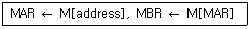
- direct mode
- indirect mode
- register mode
- index register mode
(정답률: 53%)
27. 캐시의 접근시간이 80[ns], 주기억장치의 접근시간이 800[ns], 히트율은 0.95라고 할 때 기억장치에의 평균 접근 시간은?
- 88[ns]
- 95[ns]
- 116[ns]
- 836[ns]
(정답률: 45%)
28. 데이터 통신에 가장 많이 사용되는 코드는?
- BCD
- Gray
- ASCII
- EBCDIC
(정답률: 60%)
29. 다음 중 전달기능의 인스트럭션 사용빈도가 매우 낮은 인스트럭션 형식은?
- 스택 인스트럭션 형식
- 메모리-메모리 인스트럭션 형식
- 레지스터-레지스터 인스트럭션 형식
- 레지스터-메모리 인스트럭션 형식
(정답률: 43%)
30. 다음 중 연관 메모리(associative memory)의 특징이 아닌 것은?
- thrashing 현상 발생
- 내용 지정 메모리(CAM)
- 메모리에 저장된 내용에 의한 access
- 기억장치에 저장된 항목을 찾는 시간 절약
(정답률: 66%)
31. 다중처리기 상호 연결 방법 중 시분할 공유버스를 설명한 것은?
- 시분할 공유와 기타방법의 혼합
- Multiprocessor를 비교적 경제적인 망으로 구성
- 공유버스 시스템에서 버스의 수를 기억장치의 수만큼 증가시킨 구조
- 프로세서, 기억장치, 입출력 장치들간에 하나의 버스 통신로만을 제공하는 방법
(정답률: 38%)
32. 다음 중 인터럽트 가운데 소프트웨어적 우선순위 처리 기법은?
- 폴링(polling) 방법
- 벡터 인터럽트(vector interrupt) 방법
- 데이지-체인(daisy-chain) 방법
- 병렬 우선순위(parallel priority) 방법
(정답률: 50%)
33. 다음은 명령어 수행 과정의 일반적인 순서이다. 명령어에 종속된 것으로 반드시 거치지 않아도 되는 단계끼리 묶은 것은?
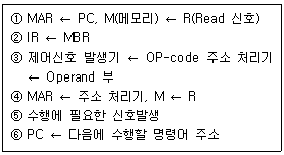
- ①, ②
- ②, ③
- ③, ④
- ④, ⑤
(정답률: 34%)
34. 명령문 구성 형태 중 하나의 오퍼랜드가 누산기 속에 포함된 명령 형식은?
- 0-주소
- 1-주소
- 2-주소
- 3-주소
(정답률: 60%)
35. 다음 그림의 회로는 무슨 gate인가? (단, 정논리의 경우임)
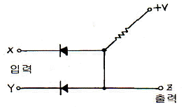
- AND gate
- OR gate
- NAND gate
- NOR gate
(정답률: 43%)
36. 가상기억장치에서 새 페이지와 주기억장치내의 페이지를 바꾸는 것을 무엇이라 하는가?
- thrashing
- swapping
- buffering
- mapping
(정답률: 60%)
37. 다음은 JK 플립플롭을 사용한 Counter 회로이다. 어떤 Counter 회로인가?
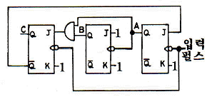
- MOD-4 Counter
- MOD-5 Counter
- MOD-6 Counter
- MOD-7 Counter
(정답률: 58%)
38. PLD(programmable logic device)내의 programmable element를 어떻게 프로그램할지를 표시하는 산업표준의 텍스트 파일은?
- CEDEC file
- IEEE file
- JEDEC file
- ASCII file
(정답률: 50%)
39. 인터럽트와 트랩을 비교 설명한 것 중 옳지 않은 것은?
- 트랩의 발생 시점은 동일한 입력에 대해서 일정하다.
- 인터럽트 발생에 대한 처리는 인터럽트 처리기(Interrupt handler)가 담당한다.
- 인터럽트의 필요성은 CPU 실행과 입ㆍ출력의 순차적인 실행에 있다.
- 인터럽트를 방생시킨 입ㆍ출력 장치를 확인하는 방법으로는 폴링과 벡터를 사용한다.
(정답률: 36%)
40. 플립플롭 회로에 그림과 같은 셋 신호(set signal), 리셋 신호(reset signal)를 줄 때, 그 출력 파형은?
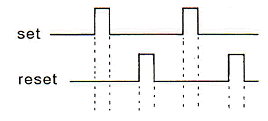
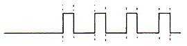
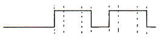
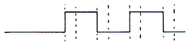
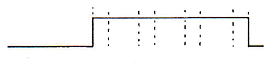
(정답률: 69%)
3과목: 마이크로전자계산기
41. 다음 중 micro-cycle의 동기 가변식(synchronous variable)에 대한 설명으로 옳은 것은?
- 모든 마이크로 오퍼레이션 중 가장 짧은 것을 마이크로 cycle time으로 한다.
- 모든 마이크로 오퍼레이션 중 가장 긴 것은 마이크로 cycle time으로 한다.
- 마이크로 오퍼레이션의 수행시간 차이가 클 때 사용되는 방식이다.
- 제어가 간단하다.
(정답률: 25%)
42. 명령어를 수행하는 과정 중에서 일어나는 내용으로 잘못된 것은?
- 명령어는 주기억 장치에서 인출되어 중앙처리장치로 이동한다.
- 명령어의 OP-code는 명령 레지스터에서 코드화되어 컴퓨터에 어떤 동작을 할 것인가를 지시한다.
- 기억 레지스터에 기억된 명령은 명령 코드와 주소부로 나누어져 처리된다.
- 명령 레지스터는 다음 명령어를 수행할 위치를 지적하도록 증가된다.
(정답률: 40%)
43. 채널(channel)에 대한 설명으로 옳지 않은 것은?
- 채널은 주기억 장치와 입ㆍ출력 장치 사이에 존재한다.
- 자료의 처리 능력을 향상시키기 위해서 사용하며, 고성능으로 자료를 처리하는 입ㆍ출력 방식이다.
- 채널을 이용하면 중앙처리장치는 입ㆍ출력에 많은 시간을 소비하지 않아도 된다.
- 입ㆍ출력 기기의 준비나 작동원리를 인터럽트 신호에 의해서 자료를 처리하는 방식이다.
(정답률: 43%)
44. DRAM(dynamic RAM)에 대한 설명으로 옳지 않은 것은?
- refresh 회로가 필요하다.
- 가격이 저렴하고, 전력 소모가 적다.
- 경제성이 뛰어나 주기억장치로 많이 사용된다.
- 비소멸성(비휘발성) 소자이다.
(정답률: 65%)
45. CPU가 주기억장치(main memory)에서 정보를 읽어 낼 때 필요없는 것은?
- READ 신호
- 시스템 클럭(clock)
- 인터럽트 신호
- 어드레스 버스(address bus)
(정답률: 25%)
46. 누산기의 내용을 2회 우측으로 시프트(shift)한 효과는?
- 누산기의 값을 4배 한 값이 누산기에 기억된다.
- 누산기의 값을 2배 한 값이 누산기에 기억된다.
- 누산기의 값을 2로 나눈 몫이 누산기에 기억된다.
- 누산기의 값을 4로 나눈 몫이 누산기에 기억된다.
(정답률: 36%)
47. 저속 장치에 연결되며, 다수의 입ㆍ출력 장치를 동시에 운영할 수 있는 채널은?
- selector channel
- interactive channel
- independent channel
- multiplexer channel
(정답률: 62%)
48. 여러 개의 입ㆍ출력 장치가 연결되어 있을 때 CPU가 각 장치의 상태 플래그를 순서대로 검사하는 과정을 무엇이라 하는가?
- interrupting
- controlling
- status checking
- polling
(정답률: 39%)
49. 연산 장치의 기능에 속하지 않는 것은?
- 비교, 판단
- 가산
- 자리 이동
- 명령 해독
(정답률: 58%)
50. CPU가 자기의 상태를 인터페이스에 알려주는 경우를 무엇이라 하는가?
- Handshake
- Acknowledge
- Data ready
- Call
(정답률: 36%)
51. 다음 중 가장 많은 Cycle time을 필요로 하는 명령어 형식은?
- 0 address 방식
- 1 address 방식
- 2 address 방식
- 3 address 방식
(정답률: 65%)
52. 마이크로컴퓨터의 특징에 해당하지 않는 것은?
- 신제품 개발비와 유지비가 적어 경제성이 있다.
- 제품 자체를 소형화할 수 있다.
- 소비전력이 적다.
- 대용량 프로그램 처리에 적합하다.
(정답률: 29%)
53. 데이터가 테이블(table) 형식으로 연속되어 있는 경우에 사용하기가 매우 편리한 주소지정방식은?
- 레지스터 주소지정방식
- 레지스터 간접 주소지정방식
- 상대 주소지정방식
- 즉시 주소지정방식
(정답률: 28%)
54. 한 플랫폼에서 작동하도록 되어 있는 프로그램을 다른 플랫폼에서 작동하도록 수정하는 것을 무엇이라 하는가?
- 시뮬레이팅(Simulating)
- 오퍼레이팅(Operating)
- 포팅(Porting)
- 디버깅(Debugging)
(정답률: 40%)
55. 다음 명령어들 중에서 시프트(shift) 명령어에 속하지 않는 것은?
- ROR(Rotate Right)
- COMC(Complement Carry)
- SHR(Logical Shift Right)
- SHRA(Arithmentic Shift Right)
(정답률: 50%)
56. 그림과 같은 어느 프로그램 중 0123 번지에 CALL A 명령이 있다. 이 CALL A를 수행한 후 PC에 기억된 값은? (단, 모든 명령문은 1바이트라 한다.)
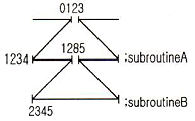
- 0124
- 1234
- 1285
- 2345
(정답률: 42%)
57. 표준 비동기 직렬 데이터 전송에서 데이터 양식에 속하지 않는 것은?
- a start bit(0)
- 5 to 8 data bit
- a status bit
- parity bit
(정답률: 23%)
58. 마이크로컴퓨터 개발 시스템에 대한 설명으로 옳지 않은 것은?
- 하드웨어 개발 시간과는 무관하다.
- 하드웨어를 조정하고 소프트웨어를 개발하며 오류를 조정하기 위한 장치이다.
- 마이크로컴퓨터의 설계와 개발에 필요한 요구를 출족시킨다.
- 마이크로컴퓨터 시스템 개발주기를 매우 빠르게 한다.
(정답률: 50%)
59. 그림은 ROM의 기본구성도이다. Ⓐ부분의 기능에 대한 명칭은?
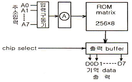
- decoder
- shift register
- address buffer
- encoder
(정답률: 25%)
60. 마이크로프로그램 제어방식과 관계가 먼 것은?
- 제어장치의 회로구성이 간단하다.
- 프로그램의 교환, 변경이 가능하다.
- 조합논리 회로를 적절히 사용한다.
- 제어기억장치와 제어기억장치 레지스터가 필요하다.
(정답률: 30%)
4과목: 논리회로
61. 다음 중 멀티플렉서에 대한 설명으로 옳은 것은?
- 해독기라고도 한다.
- 병렬에서 직렬로의 변환에 사용한다.
- 2진수를 10진수로 바꾸어 주는 회로이다.
- 여러 출력 중 하나를 선택 분배하는 것이다.
(정답률: 15%)
62. 다음 회로의 설명으로 잘못된 것은?
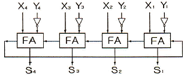
- 4비트 3초과 코드를 얻을 수 있다.
- 1의 보수를 이용하여 뺄셈을 한다.
- 4비트의 2진 병렬 감산기이다.
- X의 값이 0이면 보수를 얻을 수 있다.
(정답률: 30%)
63. A/D 변환기는 어떤 형태의 신호를 2진부호로 변환하는가?
- 펄스
- 디지털
- 비트
- 아날로그
(정답률: 47%)
64. 다음 그림과 같은 회로의 명칭은?
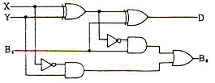
- 반가산기
- 전가산기
- 반감산기
- 전감산기
(정답률: 43%)
65. 다음 회로의 출력을 바르게 나타낸 논리식은? (단, 게이트 1, 2는 오픈 컬렉터 TTL 회로이다.)
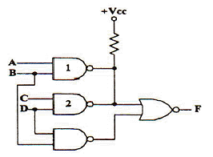
- ABCD
- (A+C)BD
- (AB)‘ㆍ(CD)’ㆍ(BD)‘
- AB+CD+BD
(정답률: 19%)
66. 0과 1의 조합에 의하여 어떠한 기호라도 표현될 수 있도록 부호화를 행하는 회로를 무엇이라 하는가?
- Encoder
- Decoder
- Comparator
- Detector
(정답률: 48%)
67. (X+Y)(X+Z)를 간략화한 표현식은?
- XY+YZ
- X+YZ
- Y+Z
- YZ
(정답률: 45%)
68. 다음 논리식과 다른 것은?
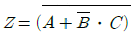
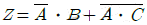
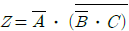
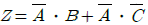
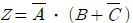
(정답률: 12%)
69. 2진수를 그레이 코드로 변환하는 회로에 들어가는 논리게이트 명칭은?
- NOR 게이트
- EX-NOR 게이트
- NAND 게이트
- EX-OR 게이트
(정답률: 36%)
70. 16비트 256워드의 일치 선택(coincident-select)형 메모리에 요구되는 2진 번지 선택 수는 몇 개인가?
- 4
- 8
- 12
- 24
(정답률: 42%)
71. 다음 논리식 중 옳지 않은 것은?
- 0+A = A
- 1+A = 1
- 0ㆍA = 0
- 1ㆍA = 1
(정답률: 56%)
72. 1[MHz]의 수정발진기가 있다. 이 출력을 분주하여 500[Hz]의 클럭 주파수를 만들고자 한다. 이 때 필요한 최소한의 플립플롭의 수는?
- 11
- 10
- 8
- 7
(정답률: 28%)
73. f(X, Y, Z)=Σ(0, 2, 4, 5, 7)인 논리식이 있다. 이것을 f(X, Y, Z)=Π( ) 형식으로 표현하면?
- Π(1, 3, 6)
- Π(1, 5, 6)
- Π(1, 6)
- Π(5, 6)
(정답률: 38%)
74. 다음 레지스터 형태 중 한 순간에 단지 1비트의 데이터가 들어가고, 모든 데이터 비트가 한 번에 출력되는 형태는?
- PISO
- PIPO
- SISO
- SIPO
(정답률: 50%)
75. 다음 중 제어 타이밍을 얻기에 편리하고 디코더가 필요한 것은?
- 리플카운터
- 존슨카운터
- 리셋카운터
- 링카운터
(정답률: 45%)
76. JK 플립플롭에서 JN=KN=1일 때 QN+1의 출력상태는?
- 반전
- 부정
- 1
- 0
(정답률: 39%)
77. 전가산기 회로에서 캐리 Cn을 나타내는 것은?
- Cn=(A⊕B)C
- Cn=AB+C
- Cn=(A⊕B)C+AB
- Cn=(A⊕B)C+AB
(정답률: 20%)
78. 다음과 같은 진리표(truth table)에 따라 동작하는 소자는?
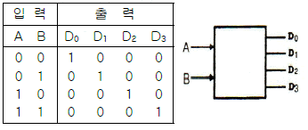
- 디코더
- 인코더
- 멀티플렉서
- 디멀티플렉서
(정답률: 37%)
79. 다음 그림의 회로 명칭은?
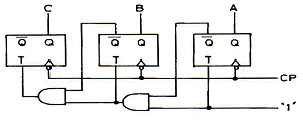
- 2진 감산계수기
- 2진 가산계수기
- 8진 감산계수기
- 8진 가산계수기
(정답률: 42%)
80. 10진수 51을 그레이 코드(Gray code)로 변환하면?
- 101011
- 101010
- 110101
- 101101
(정답률: 31%)
5과목: 데이터통신
81. 디지털 데이터를 아날로그 신호로 변환하는 방법이 아닌 것은?
- ASK
- FSK
- PSK
- PCM
(정답률: 65%)
82. OSI 참조 모델 중 다음이 설명하고 있는 기능을 수행하는 계층은?
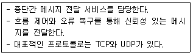
- 세션 계층
- 트랜스포트 계층
- 네트워크 계층
- 데이터링크 계층
(정답률: 34%)
83. 다음이 설명하고 있는 데이터링크 제어 프로토콜은?
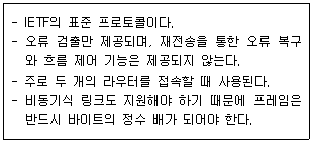
- HDLC
- PPP
- LAPB
- LLC
(정답률: 48%)
84. X.25는 ITU-T 표준으로 호스트 시스템과 패킷 교환망간 인터페이스르 규정하고 있다. 이 기능에 포함되지 않는 것은?
- 링크 계층(link level)
- 패킷 계층(packet level)
- 물리 계층(physical level)
- 전송 계층(transport level)
(정답률: 22%)
85. 웹 브라우저에서 지원하지 않는 서비스는?
- E-mail 서비스
- FTP 서비스
- HTTP 서비스
- SNMP 서비스
(정답률: 58%)
86. 다음이 설명하고 있는 것은?
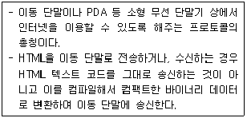
- HTTP
- FTP
- SMTP
- WAP
(정답률: 53%)
87. LAN을 망의 형상(Topology)으로 구분할 때, 각 노드에서 발생한 송신 요구가 충돌을 일으킬 경우에 재 전송하거나 충돌을 피하기 위한 매체 액세스 방식으로 주로 CSMA/CD 방식을 사용하는 것은?
- Star 형
- Bus 형
- Ring 형
- Loop 형
(정답률: 48%)
88. 데이터 통신에서 발생할 수 있는 오류(error)를 검출하는 기법이 아닌 것은?
- Parity Check
- Run Length Check
- Block Sum Check
- Cyclic Redundancy Check
(정답률: 53%)
89. 이동통신 가입자가 셀 경계를 지나면서 신호의 세기가 작아지거나 간섭이 발생하여 통신 품질이 떨어져 현재 사용 중인 채널을 끊고 다른 채널로 절체하는 것을 의미하는 것은?
- Mobile Control
- Location registering
- Hand off
- Multi-Path fading
(정답률: 58%)
90. 국(station) 간의 관계가 주/종 관계일 때 종국이 데이터를 보내려 한다면 먼저 주국으로부터 받아야 하는 신호는?
- ACK
- ENQ
- Poll
- SEL
(정답률: 14%)
91. TCP/IP에서 네트워크 계층과 관련이 없는 프로토콜은?
- IGMP
- SNMP
- ICMP
- IP
(정답률: 37%)
92. 다음이 설명하고 있는 프로토콜은?
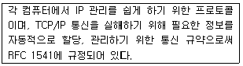
- LDP
- DHCP
- ARP
- RTCP
(정답률: 53%)
93. 다음 중 IPv6에 대한 설명으로 옳지 않은 것은?
- IPv6 주소는 128비트 길이이다.
- 양호화와 인증 옵션 기능을 제공한다.
- Qos는 일부 지원하지만, 품질 보장은 곤란하다.
- 프로토콜의 확장을 허용하도록 설계되었다.
(정답률: 54%)
94. 다음 데이터 전송 제어 절차를 순서대로 옳게 나열한 것은?
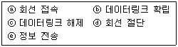
- ⓐ→ⓑ→ⓒ→ⓓ→ⓔ
- ⓐ→ⓑ→ⓔ→ⓓ→ⓒ
- ⓐ→ⓑ→ⓔ→ⓒ→ⓓ
- ⓐ→ⓔ→ⓑ→ⓓ→ⓒ
(정답률: 58%)
95. 아날로그 데이터를 디지털 신호로 변화하는 과정에 포함되지 않는 것은?
- encryption
- sampling
- quantization
- encoding
(정답률: 25%)
96. 데이터 전송 시스템에 있어서 통신 방식의 종류가 아닌 것은?
- 단방향 통신방식
- 반이중 통신방식
- 회선 다중방식
- 전이중 통신방식
(정답률: 57%)
97. 다음 인터넷 도메인의 설명 중 옳지 않은 것은?
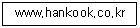
- www : 호스트 컴퓨터 이름
- hankook : 소속 기관
- co : 소속 기관의 서버이름
- kr : 소속 국가
(정답률: 36%)
98. HDLC에서 사용되는 프레임의 유형이 아닌 것은?
- Information Frame
- Supervisory Frame
- Unnumbered Frame
- Control Frame
(정답률: 45%)
99. 전송 데이터가 있는 동안에만 시간 슬롯을 할당하는 다중화 방식은?
- 통계적 시분할 다중화
- 광파장 분할 다중화
- 동기식 시분할 다중화
- 주파수 분할 다중화
(정답률: 53%)
100. 데이터링크 프로토콜인 HDLC에서 프레임의 동기를 제공하기 위해 사용되는 구성 요소는?
- 플래그(Flag)
- 제어부(Control)
- 정보부(Information)
- 프레임 검사 시퀀스(Frame Check Sequence)
(정답률: 30%)